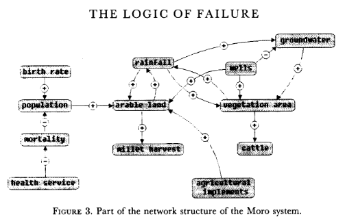
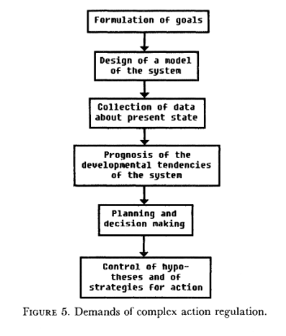

Table of Contents
1. Dorner "Logic of Failure" (1990)
- Deep reading of Dörner's article.
- Comparison of Dörner's and Parisi's approach to complexity.
- Apply Dörner's criteria to different systems.
Questions and Answers:
What has Dörner primarily investigated?
Dorner investigated "the manner in which humans deal with the unexpected and with uncertainty", in other words: planning.
Later in the course, we'll look at another approach to planning for uncertainty, 'scenario planning' (see video).
More specifically, he investigated "the action strategies implemented by persons in coping with extremely complex, dynamic, intransparent and uncertain systems."
How has he carried out his investigations?
He used computer-simulated scenarios with a large number of feature variables. The scenario was the "Moro region in West Africa (Bukina Faso)", which you won't find on a map. The language or implementation used for these simulations was not shared.
There is, and always have been, many simulation software packages. Here is a list from Wikipedia - most of these are for engineering not economic or system-wide simulations. Someone interested in simulation could ask Prof Staples who's most likely to know more about this.
Dörner calls these simulations "experiments". What are the implications? - Experiments are controlled, repeatable, and generalizable. Only the last aspect is highlighted here.
Dörner's experiments were also quantitative - he presents a multitude of graphs and data points. This, however, was not an experiment on the subject of the simulation but on the people!
What is his definition of a complex system?
"A system is extremely complex when it consists of a great variety of variables [that are] closely tied to one another, mutually affect one another, and constitute a network of interdependencies."
See figure 3 (p.4) for an illustration: 
Why these three characterisations?
Variables are closely tied: they are in the same part of the systemic action diagram (though not necessarily directly connected - degrees of separation). E.g. "birth rate" and "mortality" or "groundwater" and "cattle".
This concept is used in "graph databases", a NoSQL database that uses graph theory to store, map and query relationships. Applications: power grids, disease transmission, computer circuitry, search engine ranking. See also: "Six degrees of separation" theory and "small world" research (see also: The science behind six degrees, HBR 2003).
- Variables mutually affect each other: variables are coupled so that a change in one variable changes another variable, e.g. an increase in "birth rate" increases, and an increase in "mortality" decreases the population.
- Variables constitute a network of interdependencies: there is a path from any variable to any other, no matter how far the distance across the network. (One could attach weights to the edges of the graph to make use of this fact.) A "neural network" algorithm is a more regular (mathematically closed) form of this type of network.
How did his subjects deal with complex systems?
He distinguishes between demands and actual behavior of the test subjects: 
- What is the psychological background of this behavior?
- Which behaviors are successful in the long term?
- What is Dorner's final message?